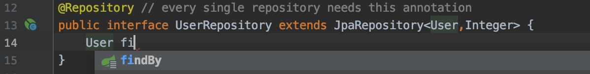
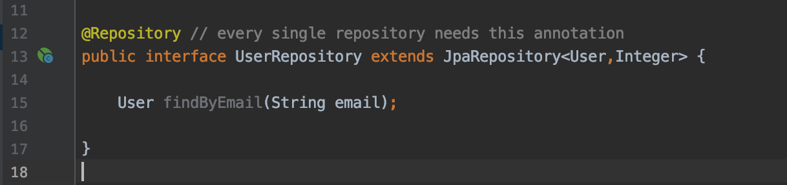

JPA
What is JPA
JPA stands for “Java Persistence API”. It is a Java specification (concept) that tells us how to communicate with databases by the help of Java objects. It is essentially the same idea as ORM, but ORM is rather an implementation of JPA concept.
When we used Hibernate ORM we made use of the JPA concept.
How to work with JPA
As mentioned, JPA is a concept and to work with it we need some kind of implementation. That implementation can very well be Hibernate.
To work with JPA we need to add a few new beans to our Hibernate ORM beans so that some ideas that lie in the foundation of JPA can be implemented.
Step One: Add dependencies
We need only one dependency this time. This dependency will allow Spring to work with the JPA concept. That is, of course, spring-data-jpa dependency that I am talking about. Here is the link to it.
Do the following:
- Add the dependency
pom.xml:
<!-- ... -->
<dependency>
<groupId>org.springframework.data</groupId>
<artifactId>spring-data-jpa</artifactId>
<version>2.5.3</version>
</dependency>
<!-- ... -->
Step Two: Add required beans
We need a bean that implements JpaVendorAdapter. JpaVendorAdapter is an interface that specifies how to realize the JPA specification.
There is a class in Hibernate that actually is responsible for working with JPA - HibernateJpaVendorAdapter (who might have guessed!). That will be the first bean that we will need.
Another one is called EntityManagerFactory.
EntityManagerFactory is an interface that allows us to communicate with our persistence (database) using entities, like User.
LocalContainerEntityManagerFactoryBean is a class that creates a EntityManagerFactory (object that creates EntityManagers) so that we can use it to make JPA work.
Transactions
We already have added JpaTransactionManager, so it is finally time to tell what transactions are.
Transactions get sent to one of your externally connected systems (like our database) to perform some changes in that system. As we begin to use more and more abstract methods of working with the database (like Hibernate ORM or JPA) we have to consider transactions.
Without transactions we cannot modify or view data in our database.
We need to create an object that will be responsible for working with JPA transactions. That is JpaTransactionManager. This class requires an EntityManagerFactory in order to create the transactions.
In order to establish that we use JPA transactions we have to add dependency @EnableTransactionManagment.
Do the following:
- Create a bean of JpaVendorAdapter
- Create a bean of EntityManagerFactory and set properties that it needs (refer to an image below)
- Create a bean of JpaTransactionManager (we have to update one that we currently have in our configuration file).
You should end up with three beans like this:
PersistenceConfig.class:
// ...
@Configuration
@PropertySource ("classpath:persistence.properties")
@EnableTransactionManagement
public class PersistenceConfig{
// ...
@Bean
public JpaTransactionManager transactionManager (EntityManagerFactory entityManagerFactory) {
JpaTransactionManager transactionManager = new JpaTransactionManager() ;
transactionManager.setEntityManagerFactory(entityManagerFactory) ;
return transactionManager;
}
@Bean
public JpaVendorAdapter getJpaVendorAdapter () {
return new HibernateJpaVendorAdapter() ;
}
@Bean
public EntityManagerFactory entityManagerFactory (DataSource dataSource, JpaVendorAdapter jpaVendorAdapter) {
LocalContainerEntityManagerFactoryBean emf = new LocalContainerEntityManagerFactoryBean() ;
emf.setDataSource(dataSource) ; // emf needs datasource to create Connection with the database
emf.setPackagesToScan("com.adtimokhin.model") ; // tells Spring where to find our entities
emf.setJpaVendorAdapter(jpaVendorAdapter) ; // emf needs jpaVendorAdapter to work with JPA
emf.afterPropertiesSet() ;
return emf.getObject() ;
}
// ...
}
It is extremely important that you name the class that returns a bean of EntityManagerFactory as entityManagerFactory(). The reason is that bean names are the id of the beans. Some inner methods use EntityManagerFactory and it needs this exact bean with that exact name (or id) to work.
Also note that we need to get rid of the LocalSessionFactoryBean bean in the same configuration file because otherwise Spring wouldn’t know which entity manager to use in JpaTransactionManager .
Back to implementing JPA into our code
Step One: Create a new Implementation for UserService
new JpaUserServiceImpl.class:
@Component
public class JpaUserServiceImpl implements UserService {
@Override
public void saveUser (String email, String password) {
}
@Override
public User findUser (String email) {
return null ;
}
@Override
public List<User> findAll () {
return null ;
}
}
Now we need to inject a dependency for sending our requests to the database. To do that we will use an object of class EntityManager.
That class will not be autowired by our usual @Autowired annotation. Instead we will use @PersistenceContext annotation.
@PersistenceContext is an annotation that tells Spring that this object is a container manager that also works with a persistence (in our case - database).
Injecting EntityManager into JpaServiceImpl.class:
@Component
public class JpaServiceImpl implements UserService {
@PersistenceContext
private EntityManager entityManager;
// ...
}
We now need to add a few annotations for the transaction to take place.
@Transactional annotation tells that method is transactional. This annotation has a parameter readOnly. If it is set to true, then Spring will know that this method does not alter the state of our database but instead only retrieves data.
If readOnly is set to false (like it is by default) that will signal Spring that that method does change the content of the database.
@Transactional annotation can be set onto the class or interface so you don’t need to put this annotation on every single method by yourself.
JpaUserServiceImpl.class:
@Component
@Transactional (readOnly = true) // transactional stuff.
public class JpaUserServiceImpl implements UserService {
@PersistenceContext
private EntityManager entityManager;
@Override
@Transactional // transactional stuff.
public void saveUser (String email, String password) {
}
@Override
public User> findUser (String email) {
return null ;
}
@Override
public List<User> findAll () {
return null ;
}
}
Now we are ready to start to look at how JPA works.
Step Two: Our beloved three methods
Method 1 (saveUser()):
JpaUserServiceImpl.class:
@Component
@Transactional (readOnly = true)
public class JpaUserServiceImpl implements UserService {
// ...
@Override
@Transactional
public void saveUser (String email, String password) {
User user = new User() ;
user.setEmail(email) ;
user.setPassword(password) ;
entityManager.persist(user) ; // this method will save User in the appropriate table in our database.
}
// ...
}
Nothing much to say. This is almost identical to what we were doing with Hibernate ORM
Method 2 (findUser()):
JpaUserServiceImpl.class:
@Component
@Transactional (readOnly = true)
public class JpaUserServiceImpl implementsUserService {
// ...
@Override
public User findUser (String email) {
TypeQuery User query = entityManager.createQuery("SELECT * FROM User u where u.email = :email", User.class);
query.setParameter("email" , email); // this is how you set up parameters in JPA.
return query.getResultList().stream().findAny().orElse(null);
}
// ...
}
Now, there is another language that JPA uses. It is called JPQL (Java Persistence Query Language). It looks like HQL and uses the same kind of syntax as SQL.
Here is documentation for it if you want to have a read through it:
But don’t worry. We don’t JPQL that often, and you will very soon see why.
Method 3 (findAll()):
JpaUserServiceImpl.class:
@Component
@Transactional (readOnly = true)
public class JpaUserServiceImpl implements User>Service {
// ...
@Override
public List<User> findAll () {
return entityManager.createQuery("SELECT u FROM User u", User.class)
.getResultList() ; // this method puts the result of the query into a List<>.
}
// ...
}
This is how we work with JPA. But those are not JPA repositories! That’s correct. I wanted to show what working with JPA looks like so that you understand what is going on under the hood of JPA repositories.
JPA Repositories
JPA Repositories are repositories that contain all queries to our database and their realization. So we actually no longer need to write SQL, HQL or JPQL queries at all. Now we will be using JPA Repositories (which have identical realization as the JPA methods we have created above) for appropriate entities.
Oh, life is great!
We have all the configuration needed to use JPA Repositories, but we can create another bean that will make opperations with JPA Repositories a bit more convinient.
Steps need to take to work with JPA Repositories
Step One: Updating our config file once again
Sometimes it happens that we get errors when working with our database. To make an error more meaningful we can set up a special bean of a class PersistenceExceptionTranslationPostProcessor. It will map errors created by JPA Repositories to more readable errors.
Another thing to do is to add a special annotation to indicate that we are using JPA Repositories and where to find them.
Do the following:
- Create bean of PersistenceExceptionTranslationPostProcessor
- Add Annotation @EnableJpaRepositories
PersistenceConfig.class:
@Configuration
@PropertySource ("classpath:persistence.properties")
@EnableTransactionManagement
public class PersistenceConfig {
// ...
@Bean
public PersistenceExceptionTranslationPostProcessor persistenceExceptionTranslator () {
return new PersistenceExceptionTranslationPostProcessor() ;
}
// ...
}
PersistenceConfig.class:
@Configuration
@PropertySource ("classpath:persistence.properties")
@EnableTransactionManagement
@EnableJpaRepositories ("com.adtimokhin.repository") // this is the annotation that we have to add
public class PersistenceConfig {
// ...
}
Pass as a property to @EnableJpaRepsitories annotation a package where you will store your JPA repositories.
Step Two: Creating JPA Repository
We usually store our repositories in a separate directory called repository.
After you create such a folder you can add your first JPA Repository into it. To do so add an interface that extends the JpaRepository interface. That interface needs two generics:
Entity class
Class of the Id attribute of that class
So, your repository will look something like this:
Newly created UserRepository:
@Repository // every single repository needs this annotation
public interface UserRepository extends JpaRepository<User,Integer> {
}
And voila! You have a JpaRepository that works with User class. Though you didn’t add any methods to that repository yourself, it extends many basic operations, like saving a User, or deleting a User.
Let’s add a method that will be used to find a User with a certain email.
All we have to do is to write an appropriate name for the method to get all of the functionality. Spring will help you to write the correct method name:
UserRepository.interface:
And like this you add methods to your repository
UserRepository.interface:
Step Three: Creating the last implementation of UserService
Now we don’t need to open connections, or create queries. We only need our good friend JPA Repository and that’s all.
Newly created UserServiceImpl:
@Component
public class UserServiceImpl implements UserService {
@Autowired
private UserRepository userRepository;
@Override
public void saveUser (String email, String password) {
}
@Override
public User findUser (String email) {
return null ;
}
@Override
public List<User> findAll () {
return null ;
}
}
Let’s also not forget to add annotations to make these methods transactional. It might be a wise decision to move all of the @Transactional annotations to the parent interface so that when we decide to have another implementation of the Service we accidentally don’t forget the annotations.
So, let’s update our UserService interface a little:
UserService.interface:
@Service
@Transactional (readOnly = true)
public interface UserService {
@Transactional
void saveUser (User user)
User findUser (String email)
List<User> findAll() ;
}
Now I’ll show you how to write the three methods.
A quick note: I have deleted all other implementations of the UserService.
Step Four: The three methods.
Method 1 (saveUser()):
UserServiceImpl.class:
@Component
public class UserServiceImpl implementsUserService {
@Autowired
private UserRepository userRepository
@Override
public void saveUser (String email, String password) {
User user = new User() ;
user.setEmail(email) ;
user.setPassword(password) ;
userRepository.save(user) ;
}
// ...
}
Method 2 (findUser()):
UserServiceImpl.class:
@Component
public class UserServiceImpl implements UserService {
// ...
@Override
public User findUser (String email) {
return userRepository.findByEmail(email) ; // this is our "custom" method in the UserRepository.
}
// ...
}
Method 3 (findAll()):
UserServiceImpl.class:
@Component
public class UserServiceImpl implements UserService {
// ...
@Override
public List<User> findAll () {
return userRepository.findAll() ; // this method is bult into JpaRepository.
}
// ...
}
We have finally covered all the standard ways working with the database through java code. Which one to choose is up to you. All of these options will work equally well. My personal favorite is JPA repositories method. It is so elegant, isn't is?